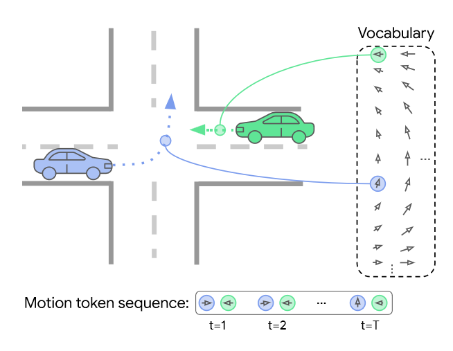
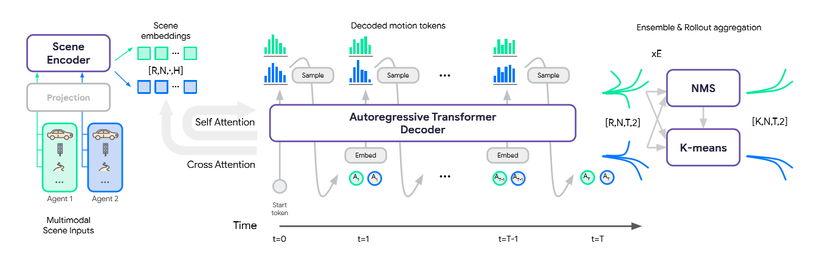
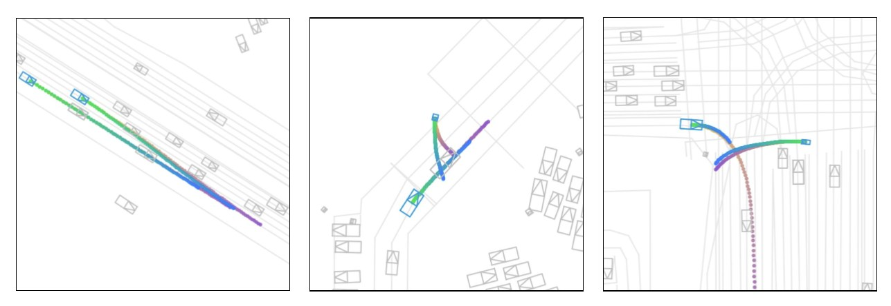
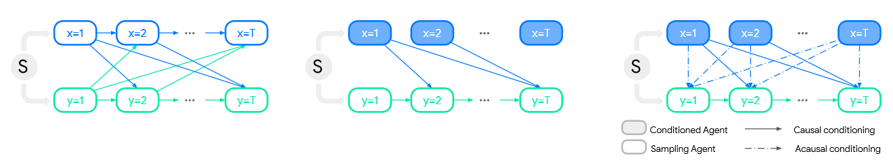
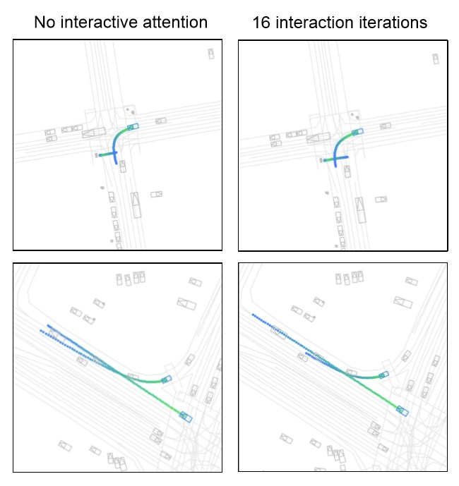
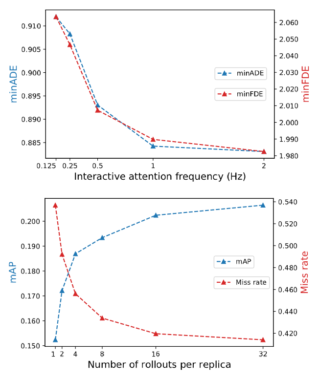
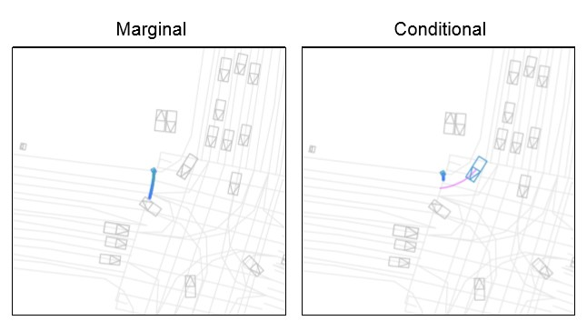
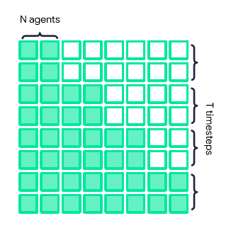

Ari Seff、Brian Cera、Dian Chen*、Mason Ng、Aurick Zhou、Nigamaa Nayakanti、Khaled S. Refaat、Rami Al-Rfou、Benjamin Sapp
Waymo
arXiv:2309.16534v1 [cs.CV]、2023年9月28日
翻訳について：原文 PDF は
26_MotionLM_2309.16534.pdf（全 16 ページ）。本文、図の説明、図中ラベル、表、脚注、付録を訳出し、論文タイトルと参考文献は原文のまま掲載。図は原図を掲載し、英語ラベルの日本語訳を併記した。数式・数値・引用番号・コードの識別子は原文を維持。原文の記述に関する補足は「訳注」と明示し、本文と区別している。
脚注*：Waymo でのインターンシップ中に行った研究。連絡先：{aseff, bensapp}@waymo.com
道路上のエージェントの将来の挙動を信頼性高く予測することは、自動運転車における安全な計画の重要な構成要素である。本研究では、連続的な軌跡を離散的なモーショントークンの系列として表現し、複数エージェントの動き予測をこの領域上の言語モデリングタスクとして定式化する。我々のモデル MotionLM にはいくつかの利点がある。第一に、多峰的な分布を学習するためにアンカーや明示的な潜在変数の最適化を必要としない。代わりに、系列トークンにわたる平均対数確率を最大化するという、単一の標準的な言語モデリング目的関数を用いる。第二に、我々の手法は、個々のエージェントの軌跡生成をインタラクションのスコアリングより前に行うという事後的なインタラクションのヒューリスティクスを回避する。代わりに、MotionLM は単一の自己回帰デコーディング過程で、相互作用するエージェントの将来にわたる同時分布を生成する。さらに、このモデルの逐次的な因数分解により、時間的に因果的な条件付きロールアウトが可能となる。提案手法は Waymo Open Motion Dataset における複数エージェントの動き予測で新たな最先端性能を達成し、インタラクティブチャレンジのリーダーボードで 1 位にランクされた。

図1：我々のモデルは、一群のエージェントについて離散的なモーショントークンの系列を自己回帰的に生成し、一貫性のあるインタラクティブな軌跡予測を生成する。
図中ラベル：Vocabulary＝語彙、Motion token sequence＝モーショントークン系列
現代の系列モデルは、ドメイン固有の仮定を最小限しか組み込まない次トークン予測の目的関数を用いることが多い。たとえば、自己回帰型言語モデル［3, 10］は、それまでのテキストを条件として次に観測されるサブワードの確率を最大化するように事前学習される。構文解析や統語に関する事前定義された概念は組み込まれていない。この手法は、音声［2］や画像生成［49］のような連続領域でも成功を収めている。任意のカテゴリ分布の柔軟性を活用し、上記の研究は連続データを、言語モデルの語彙を思わせる離散トークンの集合で表現している。
運転シナリオにおいて、道路利用者は絶え間ない対話の参加者になぞらえることができる。彼らは、コミュニケーションの流動性を映すように、行動と反応の動的な連なりを絶えずやり取りしている。この豊かなインタラクションの網の中を進むには、関与する行為者の起こりうる操縦や反応を予期する能力が必要である。今日の言語モデルが会話にわたる洗練された分布を捉えられるのと同じように、類似の系列モデルを活用して道路エージェントの挙動を予測できないだろうか。
将来の世界状態全体をモデル化するうえでよく用いられる単純化は、エージェントの挙動の同時分布を、エージェントごとの独立な周辺分布に分解することであった。このタスクには多くの進展があるものの［8, 47, 12, 25, 31, 5, 6, 21］、周辺予測は計画システムへの入力としては不十分である。周辺予測は異なるエージェントの行動間の将来の依存関係を表現しないため、シーンレベルで一貫しない予測につながる。
既存の同時予測手法の中には、周辺軌跡の生成とインタラクションのスコアリングを分離するものがある［40, 42, 29］。たとえば Luo ら［29］は、まず各エージェントについて少数の周辺軌跡を独立に生成し、その後、確率伝搬（belief propagation）アルゴリズムによってエージェント間の各軌跡ペアに学習済みポテンシャルを割り当てる。Sun ら［42］は手作業のヒューリスティクスを用いてエージェントを影響を与える側（influencer）か反応する側（reactor）のいずれかにタグ付けし、その後、周辺予測と条件付き予測を組み合わせて同時予測を形成する。
また、これらの手法は軌跡内の時間的依存関係を明示的にモデル化しないため、その条件付き予測は見せかけの相関の影響を受けやすく、現実性の低い反応予測につながる可能性があることも指摘しておく。たとえば、これらのモデルは先行エージェントの減速と後続エージェントの減速との間の相関は捉えられるが、どちらが他方を減速させている可能性が高いかを推論できないことがある。対照的に、自己回帰的な因数分解を用いる従来の同時モデル（たとえば［36, 43, 39］）は、将来の時間的依存関係を尊重する。これらのモデルは一般に、多様性を得るために明示的な潜在変数に依存しており、それはエビデンス下界（evidence lower bound）または正規化フロー（normalizing flow）によって最適化される。
本研究では、自己回帰型言語モデルに着想を得た単純な学習目的関数を活用し、離散的なモーショントークン上の単一の時間的に因果的なデコーディング過程において、軌跡生成とインタラクションのモデリングを統合する（図1）。我々のモデル MotionLM は、相互作用するエージェント間のこれらのトークン系列の対数確率を直接最大化するように学習される。推論時には、同時軌跡が段階的に生成される。すなわち、相互作用するエージェントが同時にトークンをサンプリングし、互いに注意を向け、これを繰り返す。学習時に軌跡の多峰性を手作業で強制する従来の手法とは対照的に、我々のモデルは潜在変数もアンカーも一切用いず、多峰性はもっぱらサンプリングの特性として現れる。MotionLM は、周辺予測、同時予測、条件付き予測を含むいくつかの下流の挙動予測タスクに適用できる。
本研究の貢献は以下のとおりである。
周辺軌跡予測。挙動予測器は、たとえば最近の動き予測ベンチマーク［14, 9, 4, 51, 37］のように、個々のエージェントに対する予測で評価されることが多い。従来の手法はラスタ化したシーンを CNN で処理する［8, 5, 12, 17］。より最近の研究は、シーンを点やポリグラフ（polygraph）で表現し、それらを GNN［6, 25, 47, 22］やトランスフォーマー［31, 40, 20］で処理する。将来軌跡の多峰性に対処するため、事前定義されたアンカー［8, 5］や意図点（intention point）［40, 52, 28］によって多様性を手作業で強制するモデルもある。潜在変数モデリングによって多様なモードを学習する研究もある（たとえば［24］）。
これらの研究は個々のエージェントの多峰的な将来軌跡を生成するが、エージェントの起こりうる将来の周辺分布を捉えるだけで、エージェント間のインタラクションはモデル化しない。
インタラクティブ軌跡予測。インタラクティブな挙動予測器は、エージェントの将来の同時分布をモデル化する。このタスクは周辺的な動き予測よりもはるかに研究が少ない。たとえば、Waymo Open Motion Dataset（WOMD）［14］のチャレンジのリーダーボードには現在、周辺予測について 71 件の公開エントリがあるのに対し、インタラクション予測についてはわずか 14 件である。
Ngiam ら［32］は、同時モードを出力するトランスフォーマーベースの混合モデルによって将来軌跡の分布をモデル化する。完全な同時モデルによる指数的な爆発を避けるため、Luo ら［29］はペアごとの同時分布をモデル化する。Tolstaya ら［44］、Song ら［41］、Sun ら［42］は、あるエージェントを予測する際に別のエージェントの将来軌跡を与えることで、条件付き予測を考える。Shi ら［40］は、周辺軌跡の確率を単純に掛け合わせることで同時確率を導出しており、本質的にエージェントを独立として扱うため、精度が制限される可能性がある。Cui ら［11］、Casas ら［7］、Girgis ら［15］は、大域的な潜在変数を用いて完全な同時分布を縮約する。我々の自己回帰的な因数分解とは異なり、上記のモデルは典型的には「ワンショット」（時間方向に並列）の因数分解に従い、時間的に因果的なインタラクションを明示的にはモデル化しない。
自己回帰的軌跡予測。自己回帰的な挙動予測器は、一定間隔で軌跡を生成し、シーンとして一貫した複数エージェントの軌跡を生成する。Rhinehart ら［36］、Tang と Salakhutdinov［43］、Amirloo ら［1］、Salzmann ら［39］、Yuan ら［50］は、潜在変数モデルを用いて複数エージェントの将来軌跡を予測する。Lu ら［27］は、残りの状態を埋める前に、ガウス混合によってキーフレームを自己回帰的に出力することを探求している。［18］では、敵対的目的関数が並列ビームサーチと組み合わされ、複数エージェントのロールアウトを学習する。ほとんどの自己回帰的軌跡予測器とは異なり、我々の手法は潜在変数やビームサーチに依存せず、離散的なモーショントークン系列の学習済み分布から直接サンプリングすることで、多峰的な同時軌跡を生成する。

図2：MotionLM のアーキテクチャ。まず、モデル化対象の各エージェントを基準とした異種のシーン特徴量を、形状 \(R, N, \cdot, H\) のシーン埋め込みとしてエンコードする（左）。ここで、\(R\) はロールアウト数、\(N\) は（同時にモデル化される）エージェント数、\(H\) は各埋め込みの次元である。推論時の並列サンプリングのため、埋め込みをバッチ次元で \(R\) 回繰り返す。次に、軌跡デコーダが複数エージェントについて \(T\) 個の離散的なモーショントークンを時間的に因果的な形で自己回帰的にロールアウトする（中央）。最後に、非最大値抑制で初期化した k-means クラスタリングを用いる単純な集約によって、ロールアウトの代表的なモードを復元できる（右）。
図中ラベル：Scene Encoder＝シーンエンコーダ、Projection＝射影、Agent 1／Agent 2＝エージェント1／エージェント2、Multimodal Scene Inputs＝マルチモーダルなシーン入力、Scene embeddings＝シーン埋め込み、Self Attention＝自己注意、Cross Attention＝交差注意、Decoded motion tokens＝デコードされたモーショントークン、Sample＝サンプリング、Autoregressive Transformer Decoder＝自己回帰トランスフォーマーデコーダ、Embed＝埋め込み、Start token＝開始トークン、Time＝時間、Ensemble & Rollout aggregation＝アンサンブルとロールアウト集約
連続領域における離散系列モデリング。連続領域で系列を生成する際の有効な手法の 1 つは、出力空間を離散化し、各ステップでカテゴリ分布を予測することである。
たとえば画像生成において、van den Oord ら［45］は各チャネルについて一様に離散化したピクセル値を逐次的に予測し、これが連続値を直接出力するよりも性能が良いことを見出した。［35］や［49］のようなテキストからの画像生成に関する複数の研究は、画像を離散トークンに写像する学習済みトークナイザと、テキストプロンプトを与えられて離散トークンを予測する自己回帰モデルという 2 段階の処理を用いる。音声生成では、WaveNet［46］が離散化の前に \(\mu\)-law 変換を適用する。Borsos ら［2］は階層的なトークナイザ／デトークナイザを学習し、主要なトランスフォーマー系列モデルは中間の離散トークン上で動作する。ポリゴンメッシュを生成する際、Nash ら［30］は各頂点の座標を一様に量子化する。MotionLM では、エージェント軌跡の連続するウェイポイント間の軸に沿った差分（デルタ）に対して、単純な一様量子化を用いる。
我々は、周辺予測、同時予測、条件付き予測を含むさまざまな下流タスクに適用できる一般的な形で、複数エージェントのインタラクションにわたる分布をモデル化することを目指す。これには、運転シナリオにおける大きな多峰性を捉えることのできる表現力の高い生成フレームワークが必要である。加えて、ここでは時間的依存関係を保つことにも配慮する。すなわち、我々のモデルにおける推論は、各ノードの親が時間的に前に、子が後に位置する有向非巡回グラフに従う（3.3 節、図4）。これにより、時間的因果性に従わない場合に生じうるある種の見せかけの相関を排除することで、因果的介入［34］により近い条件付き予測が可能になる2。時間的依存関係を保たない同時モデルは、計画における重要な用途である現実的なエージェントの反応を予測する能力が限られる可能性があることを我々は観察している（4.6 節）。この目的のため、我々は将来デコーダの自己回帰的な因数分解を活用する。そこでは、エージェントのモーショントークンはそれ以前にサンプリングされたすべてのトークンに条件付きで依存し、軌跡は逐次的にロールアウトされる（図2）。
脚注2：我々は、（純粋に観測的なデータと観測されない交絡因子の理論的限界のため）我々のモデルが因果関係を直接モデル化できると主張するものではない。ここでは、時間的因果性を破らないように配慮しているだけである。
\(S\) を、ある与えられたシナリオの入力データとする。これには、道路グラフ（roadgraph）の要素や信号機の状態といったコンテキストに加え、道路エージェント（たとえば車両、自転車、歩行者）とその最近の履歴を記述する特徴量が含まれうる。これらはすべて現在のタイムステップ \(t = 0\) で与えられる。我々のタスクは、将来のタイムステップ \(t = 1, ..., T\) における、注目する \(N\) 個のエージェントの同時状態 \(Y_t \doteq \{y_t^1, y_t^2, ..., y_t^N\}\) に対する予測を生成することである。完全な状態ではなく、これらの将来状態のターゲットは典型的には 2 次元のウェイポイント（すなわち \((x, y)\) 座標）であり、\(T\) 個のウェイポイントが個々のエージェントの完全な正解軌跡を形成する。
我々のモデリングフレームワークでは、将来の各タイムステップにおいて、各対象エージェントについて予測行動をサンプリングする。これらの行動は、後の 3.2.2 節で述べるように、有限の語彙からの離散的なモーショントークンとして定式化される。\(a_t^n\) を時刻 \(t\) における \(n\) 番目のエージェントの目標行動（正解ウェイポイントから導出される）とし、\(A_t \doteq \{a_t^1, a_t^2, ..., a_t^N\}\) を時刻 \(t\) におけるすべてのエージェントの目標行動の集合とする。
因数分解。同時的な将来の行動系列にわたる分布を、条件付き分布の積として因数分解する。
\[ p_\theta(A_1, A_2, ...A_T \mid S) = \prod_{t=1}^{T} p_\theta(A_t \mid A_{\lt t}, S), \tag{1} \]
\[ p_\theta(A_t \mid A_{\lt t}, S) = \prod_{n=1}^{N} p_\theta(a_t^n \mid A_{\lt t}, S). \tag{2} \]
［36, 43］と同様に、式 (2) は、それまでの行動とシーンコンテキストが与えられたとき、時刻 \(t\) においてエージェントの行動を条件付き独立として扱うことを表している。これは短い時間間隔における実世界の運転と経験的に整合する。たとえば、能力の損なわれていない人間のドライバーは、前方の車両のブレーキに反応してアクセルを離すのに一般に少なくとも 500 ms を要する（［13］）。我々の実験では、2 Hz の反応で最先端の同時予測モデルを上回るのに十分であることがわかった。
我々のモデルの因数分解は潜在変数を一切含まないことに注意されたい。多峰的な予測は、純粋に各ロールアウトタイムステップでのカテゴリカルなトークンサンプリングから生じる。
学習目的関数。MotionLM は、観測されたエージェントの挙動の同時分布に一致するように学習される生成モデルとして定式化される。具体的には、複数エージェントの行動系列に対する最尤目的関数に従う。
\[ \arg\max_\theta \prod_{t=1}^{T} p_\theta(A_t \mid A_{\lt t}, S) \tag{3} \]
現代の言語モデルの典型的な学習設定と同様に、我々は「教師強制（teacher-forcing）」を用いる。これは、各タイムステップで（予測ではなく）それまでの正解トークンを与えるもので、安定性を高める傾向があり、学習中のサンプリングを回避する。これはすべての対象エージェントに適用されることに注意されたい。学習において、各対象エージェントは、現在のタイムステップより前のすべての対象エージェントの正解行動系列のプレフィックスにさらされる。これにより、トランスフォーマー［48］のような現代の注意機構ベースのアーキテクチャを用いる場合に、自然に時間方向の並列化が可能になる。
我々のモデルは、一般的な模倣学習フレームワークと同じ理論的限界（たとえば、誤差の累積［38］や観測されない交絡因子による自己欺瞞（self-delusion）［33］）の影響を受ける。しかし実際には、これらが予測タスクにおける高い性能を妨げることはないことがわかった。
我々のモデルは 2 つの主要なネットワークから構成される。初期のシーン要素を処理するエンコーダと、それに続く軌跡デコーダである。軌跡デコーダは、トランスフォーマーアーキテクチャ［48］に従い、シーンエンコーディングへの交差注意と、エージェントのモーショントークンに沿った自己注意の両方を行う。
シーンエンコーダ（図2 左）は、道路グラフ、信号機の状態、周囲のエージェントの軌跡履歴を含む、いくつかの入力モダリティからの情報を処理する役割を担う。ここでは、我々のモデルのシーンエンコーディングのバックボーンとして、［31］で提案された早期融合（early fusion）ネットワークの設計に従う。早期融合を特に選んだのは、最小限の帰納バイアスですべてのモダリティをまとめて処理できる柔軟性のためである。
上記の特徴量は、モデル化対象の各エージェントの座標系を基準に抽出される。入力テンソルは次に、すべての過去タイムステップとエージェントにわたって情報を交換する自己注意層のスタックに入力される。最初の層では、［23, 19］と同様に、処理されるベクトルの集合を扱いやすい数に削減するため、潜在クエリが元の入力に交差注意する。詳細は［31］を参照されたい。
我々の軌跡デコーダ（図2 中央）は、複数エージェントのモーショントークンの系列を生成する役割を担う。
離散的なモーショントークン。我々は、連続的なウェイポイントからなる軌跡を離散トークンの系列に変換することを選択する。これにより、サンプリングを各タイムステップにおける純粋な分類タスクとして扱うことが可能になり、標準的なソフトマックス層で実装できる。このように連続的なターゲットを離散化することは、本質的に連続な他の領域、たとえば音声生成［46］やメッシュ生成［30］で有効であることが示されている。離散的なモーショントークンは、モデルから一部の精度を自然に隠し、不完全な連続値予測から生じうる誤差累積の影響を緩和している可能性があると我々は推測している。同様に、教師強制される正解軌跡に手作業でノイズを加える（たとえば［26］で行われているように）必要性も見出さなかった。
量子化。目標となる離散トークンを抽出するため、まず各エージェントの正解軌跡を、シナリオの時刻 \(t = 0\) におけるそのエージェントの位置と向きを基準に正規化する。次に、座標ごとのビンの総数と、デルタの最大値・最小値に従って、一様に量子化された \((\Delta x, \Delta y)\) 語彙をパラメータ化する。すると、連続的な単一座標のデルタ行動は対応するインデックス \(\in [0, \mathrm{num\_bins} - 1]\) に写像でき、1 ステップあたりの完全な \((\Delta x, \Delta y)\) 行動について 2 つのインデックスが得られる。軌跡全体を正確に再構成する行動を抽出するため、貪欲探索を用い、次のウェイポイント座標を最小の誤差で再構成する量子化行動を逐次的に選択する。
デルタ行動を「Verlet」ステップで包む。ここでは、ゼロ行動は前のステップと同じデルタインデックスを用いるべきことを示す（［36］が連続状態に対して行うのと同様）。エージェントの速度は連続するタイムステップ間で滑らかに変化する傾向があるため、これは語彙全体のサイズを削減するのに役立ち、学習のダイナミクスを単純化する。最後に、\(T\) 個の逐次予測のみを維持するため、座標ごとの行動を、それらの直積へのインデックスとなる単一の整数にまとめる。実際には、ここで示すモデルでは座標あたり 13 トークンを用い、語彙で利用可能な離散トークンは合計 \(13^2 = 169\) 個である（詳細は付録 A を参照）。
各離散モーショントークンについて、学習される値埋め込みと 2 つの学習される位置埋め込み（タイムステップとエージェントの識別を表す）を計算し、トランスフォーマーデコーダに入力する前に要素ごとの和によって結合する。

図3：3 つの WOMD シーンについて、予測された同時ロールアウトの上位 2 モードを示す。色のグラデーションは \(t = 0\)s から \(t = 8\)s への時間の進行を示し、最も確率の高い同時モードは緑から青へ、2 番目の同時モードはオレンジから紫へと変化する。3 種類のインタラクションが観察される。隣接車線のエージェントが車線変更のタイミングに応じて車線変更中のエージェントに道を譲る（左）、歩行者が通過する車両の進行に応じてその車両の後ろを歩く（中央）、旋回する車両が横断する自転車に道を譲る（最も確率の高いモード）か、自転車が近づく前に曲がる（2 番目のモード）（右）。
平坦化したエージェント・時間の自己注意。我々は、モデル化対象のすべてのエージェントのモーショントークンを時間にわたって平坦化した系列に沿って動作する、単一の自己注意機構をデコーダに含めることを選択する。したがって、\(N\) 個のエージェントそれぞれについて長さ \(T\) の目標系列が与えられたとき、\(NT\) 個の要素にわたって自己注意を行う。これは、自己注意をかける系列が同時にモデル化するエージェント数に対して線形に増大することを意味するが、ここでの系列長の絶対値はなお非常に小さいことに注意されたい（WOMD のインタラクティブ分割では長さ 32。2 エージェントについて 2 Hz で 8 秒の予測）。エージェントと時間を因数分解した注意を別々のパスで行うことも可能であるが［32］、ここでは単純さのために単一のパスを用いる。
自車エージェントの座標系。エージェント中心の特徴量エンコーディング（3.2.1 節）への交差注意を容易にするため、平坦化したトークン系列を、モデル化対象の各エージェントについて 1 回ずつ表現する。モデル化対象の各エージェントは 1 回ずつ「自車（ego）」エージェントとして扱われ、そのエージェントのシーン特徴量に対して交差注意が行われる。自車エージェントをバッチ次元にまとめることで、学習と推論の際の並列化が可能になる。
我々の自己回帰的な因数分解は、同時ロールアウトの間、時間的依存関係を自然に尊重する。すなわち、特定のエージェントのモーショントークンのサンプリングは、（任意のエージェントの）過去のトークンのみの影響を受け、将来のトークンの影響は受けない。学習時には、自己注意演算が各ステップの表現をそれに従ってのみ更新することを保証するマスクが必要である。図8（付録）に示すように、この注意マスクはブロック状の階段パターンを示し、すべてのエージェントを互いの履歴に対して直前のステップまでしか見えないようにする。
時間的に因果的な条件付け。前述のとおり、この因数分解の特筆すべき利点は、時間的に因果的な条件付きロールアウトを問い合わせられることである（図4）。この設定では、クエリエージェントがある行動系列をとるように固定し、他のエージェントのみをロールアウトする。

図4：同時ロールアウトに対する因果ベイジアンネットワーク表現（左）、介入後の因果ベイジアンネットワーク（中央）、非因果的な条件付け（右）。(a) 同時ロールアウトに対する因果ベイジアンネットワーク。(b) 介入後の因果ベイジアンネットワーク。(c) 非因果的な条件付け。実線は時間的に因果的な依存関係を示し、破線は非因果的な情報の流れを示す。時間的依存関係の制約を持たないモデルは非因果的な条件付けはサポートするが、時間的に因果的な条件付けはサポートしない。これはエージェントの反応を予測しようとする際に問題となりうる。
図中ラベル：Conditioned Agent＝条件付けされるエージェント、Sampling Agent＝サンプリングされるエージェント、Causal conditioning＝因果的な条件付け、Acausal conditioning＝非因果的な条件付け
これは、交絡因子が存在しない場合の因果的介入［34］の計算の近似とみなすことができる。一般に、（観測されない交絡因子が存在する可能性があるため）介入は純粋に観測データだけからは学習できないが、我々のモデルの因数分解は少なくとも、時間的因果性を破ることから生じるある種の見せかけの相関を排除する。
図4 (a) に、同時ロールアウトを支配する因果ベイジアンネットワークの例を示す。ノード \(x = 1, ...T\) に、その入力エッジを削除することで介入を適用すると、図4 (b) に示す介入後のベイジアンネットワークが得られ、これは時間的因果性に従う。一方、非因果的な条件付け（図4 (c)）は非因果的な情報の流れをもたらし、\(i \geq j\) についてノード \(x = i\) がノード \(y = j\) に関する我々の信念に影響を与える。
WOMD［14］のような同時動き予測のベンチマークタスクでは、少数の同時「モード」という形での、同時将来分布のコンパクトな表現が必要である。各モードには確率が割り当てられ、特定のホモトピー的な結果（たとえば追い越す／譲る）や、速度／幾何形状のより微妙な違いに対応しうる。ここでは、2 つの主要な目標を達成するためにロールアウトを集約する。1) 分布の背後にあるモードを明らかにすること、2) 各モードの確率を推定することである。具体的には、［47］で述べられた非最大値抑制（NMS）による集約方式に従うが、すべてのエージェントの予測が対応するクラスタに対して所定の距離しきい値内にあることを保証することで、これを同時設定に拡張する。加えて、認識論的不確実性（epistemic uncertainty）を考慮し予測の品質をさらに向上させるためにモデルのアンサンブルを活用し、集約ステップの前に、独立に学習された複製（レプリカ）からのロールアウトを結合する。
MotionLM を周辺的および同時的な動き予測のベンチマークで評価し、その条件付き予測を検証し、モデリング上の選択についてアブレーションを行う。
Waymo Open Motion Dataset（WOMD）。WOMD［14］は、都市部および郊外環境における実世界の走行から収集された、20 秒のシナリオ 103k 件のコレクションである。セグメントは、9 秒の注目ウィンドウからなる 1.1M 件の事例に分割されており、最初の 1 秒が入力コンテキストとなり、残りの 8 秒が予測対象である。信号機の状態や車線の特徴量といった地図の特徴量が、位置、速度、加速度、バウンディングボックスなどのエージェントの状態とともに提供される。
周辺予測チャレンジとインタラクティブ予測チャレンジ。周辺予測チャレンジでは、モデルは各対象エージェントについて、各モードの尤度とともに 6 本の軌跡を出力しなければならない。インタラクティブチャレンジでは、各テスト事例において相互作用する 2 つのエージェントがラベル付けされている。この場合、モデルは重み付きの同時軌跡を 6 本出力しなければならない。
周辺予測チャレンジとインタラクティブ予測チャレンジの主要な評価指標はそれぞれ soft mAP と mAP であり、副次的な指標としてミス率（miss rate）がある。距離指標 minADE と minFDE は、予測品質に関する追加の手がかりを与える。インタラクティブ予測チャレンジでは、これらの指標はシーンレベルの同時計算を指す。また、同時モデルのシーンレベルの一貫性を評価するために、独自の予測オーバーラップ（prediction overlap）指標（［29］と同様）も用いる。これらの指標の詳細は付録 C を参照されたい。
最大 8 個のモデル複製と、複製あたり 512 回のロールアウトで実験し、さまざまな構成での性能を評価する。行動空間とモデルのハイパーパラメータの詳細は付録 A および B を参照されたい。
| モデル | minADE (↓) | minFDE (↓) | Miss Rate (↓) | Soft mAP (↑) |
|---|---|---|---|---|
| HDGT ［20］ | 0.7676 | 1.1077 | 0.1325 | 0.3709 |
| MPA ［22］ | 0.5913 | 1.2507 | 0.1603 | 0.3930 |
| MTR ［40］ | 0.6050 | 1.2207 | 0.1351 | 0.4216 |
| Wayformer factorized ［31］ | 0.5447 | 1.1255 | 0.1229 | 0.4260 |
| Wayformer multi-axis ［31］ | 0.5454 | 1.1280 | 0.1228 | 0.4335 |
| MTR-A ［40］ | 0.5640 | 1.1344 | 0.1160 | 0.4594 |
| MotionLM（本手法） | 0.5509 | 1.1199 | 0.1058 | 0.4507 |
表1：WOMD テストセットにおける周辺予測の性能。タイムステップ（3、5、8 秒）とエージェントの種類（車両、歩行者、自転車）にわたって平均した指標を示す。灰色の列（Miss Rate と Soft mAP）は、周辺予測チャレンジの公式ランキング指標を示す。
| モデル | minADE (↓) | minFDE (↓) | Miss Rate (↓) | mAP (↑) |
|---|---|---|---|---|
| SceneTransformer (J) ［32］ | 0.9774 | 2.1892 | 0.4942 | 0.1192 |
| M2I ［42］ | 1.3506 | 2.8325 | 0.5538 | 0.1239 |
| DenseTNT ［28］ | 1.1417 | 2.4904 | 0.5350 | 0.1647 |
| MTR ［40］ | 0.9181 | 2.0633 | 0.4411 | 0.2037 |
| JFP ［29］ | 0.8817 | 1.9905 | 0.4233 | 0.2050 |
| MotionLM（本手法） | 0.8911 | 2.0067 | 0.4115 | 0.2178 |
表2：WOMD インタラクティブテストセットにおける同時予測の性能。タイムステップ（3、5、8 秒）とエージェントの種類（車両、歩行者、自転車）にわたって平均したシーンレベルの同時指標を示す。灰色の列（Miss Rate と mAP）は、チャレンジの公式ランキング指標を示す。
周辺的な動き予測。表1 に示すように、我々のモデルは WOMD の周辺的な動き予測（エージェントごとに独立）において最先端と競合する性能を示す。主要なランキング指標である soft mAP において、我々のモデルは 2 位であり、MTRA［40］が達成したスコアとの差は 2% 未満である。加えて、我々のモデルはすべての先行研究に対してミス率を大幅に改善しており、従来の最先端と比べて相対的に 9% 削減している。自己回帰的なロールアウトは、軌跡アンカー［8］や静的な意図点［40］に頼ることなく、多峰的な将来挙動の多様性を十分に捉えることができる。
インタラクティブな動き予測。我々のモデルは WOMD のインタラクティブ予測チャレンジで最先端の結果を達成し、従来の最高スコアのエントリである JFP［29］に対して、mAP で相対 6%、ミス率で相対 3% の改善（2 つの公式ランキング指標）を達成した（表2 参照）。JFP とは対照的に、我々の手法は事前に構築された周辺軌跡のペアをスコアリングするのではなく、同時ロールアウトを直接生成する。図3 に我々のモデルが予測したインタラクションの例を示す。
| モデル | Prediction Overlap (↓) | |
|---|---|---|
| Test | LSTM Baseline ［14］ | 0.07462 |
| Scene Transformer ［32］ | 0.04336 | |
| JFP ［29］ | 0.02671 | |
| MotionLM (joint) | 0.02607 | |
| Val | MotionLM (marginal) | 0.0404 |
| MotionLM (joint) | 0.0292 |
表3：予測オーバーラップ率。WOMD インタラクティブのテストセットと検証セットにおける、さまざまなモデル構成の独自の予測オーバーラップ指標を示す。（訳注：Test＝テストセット、Val＝検証セット、joint＝同時版、marginal＝周辺版）
表3 は、WOMD インタラクティブのテストセットと検証セットにおけるさまざまなモデルの予測オーバーラップ率を示す（指標の詳細は付録 C.2 を参照）。テストセットの予測は［14, 32, 29］の著者らから入手した。MotionLM は最も低い予測オーバーラップ率を達成しており、これはシーンとして一貫した予測であることを示している。加えて、検証セットでは、我々のモデルの 2 つの版、すなわち周辺版と同時版を評価する。周辺版は学習時と推論時のロールアウトの両方でモデル化対象のエージェント間の注意を行わないのに対し、同時版は 2 Hz のインタラクティブな注意を行う。周辺版は同時版より相対的に 38% 高いオーバーラップ率となることがわかる。同時モデルにおけるインタラクティブな注意により、エージェントは互いにより適切に反応できる。
インタラクティブな注意の頻度。同時ロールアウト中のエージェント間の反応性の重要性を評価するため、他のアーキテクチャの詳細を一定に保ったまま、インタラクティブな注意演算の頻度を変化させる。リーダーボードの結果には、ここで検討した最大の頻度である 2 Hz を用いる。範囲の下端では、0.125 Hz は、エージェントが互いの初期状態のみを観測し、その後再び通信することなく 8 秒間のロールアウト全体を進める（すなわち周辺ロールアウト）ことに相当する。
エージェントがより頻繁にインタラクションすることを許されるにつれ、性能指標は概して改善する（図6 上、付録の表5）。インタラクティブな注意の頻度が高いほど、より正確な同時予測につながるだけでなく、異なるエージェントの予測間のありえない重なり（すなわち衝突）も減少する。図5 は、周辺予測ではエージェント間にありえない重なりが生じる一方、同時予測では適切に分離した軌跡が得られる例を示している。アニメーションによる可視化は補足資料を参照されたい。

図5：ここで検討したインタラクティブな注意の頻度の両極端における、最上位の同時ロールアウトモードの可視化。インタラクティブな注意がない場合（左）、モデル化された 2 つのエージェントは 8 秒間のロールアウトの最初に一度だけ互いに注意を向け、その後は二度と向けない。これに対し、2 Hz の注意（右）では合計 16 回である。インタラクティブな注意がゼロの場合に生じる独立したロールアウトは、シーンとして一貫しない重なりをもたらしうる。たとえば、旋回する車両が横断する歩行者に配慮できない（左上）、あるいは横断する車両に適切に道を譲れない（左下）。
図中ラベル：No interactive attention＝インタラクティブな注意なし、16 interaction iterations＝16 回のインタラクション反復

図6：WOMD インタラクティブ検証セットにおける、インタラクティブな注意の頻度（上）および複製あたりのロールアウト数（下）を変化させたときの同時予測の性能。縦軸は 8 複製のアンサンブルについての同時（シーンレベル）指標を示す。完全なパラメータ範囲と指標は付録の表5 および表6 を参照されたい。
図中ラベル：Interactive attention frequency (Hz)＝インタラクティブな注意の頻度（Hz）、Number of rollouts per replica＝複製あたりのロールアウト数、Miss rate＝ミス率
ロールアウト数。我々のロールアウト集約では、多峰的な将来分布を忠実に表現するために、モデルから十分な数のサンプルを生成する必要がある。このアブレーションでは、生成するロールアウト数を変化させるが、評価のために常に \(k = 6\) 個のモードにクラスタリングする。一般に、より多くのロールアウトを用いるほど性能指標が改善することがわかる（図6 下、付録の表6）。最終的なリーダーボードの結果には複製あたり 512 回のロールアウトを用いるが、32 回のロールアウトでも joint mAP で従来の最高エントリを上回るのに十分である。
3.3 節で述べたように、我々のモデルは、［36, 43］のような従来の自己回帰的な取り組みと同様に、「時間的に因果的な」条件付けを自然にサポートする。この設定では、1 つのクエリエージェントを指定した軌跡に従うように固定し、対象エージェントを確率的にロールアウトする。しかし、モデルを変更してクエリエージェントの軌跡全体を漏洩させ、条件付けの際にその将来を対象エージェントに非因果的に見せることもできる。これは、たとえば、この非因果的な条件付き分布を直接モデル化する［44］や、この分布にエネルギーベースモデルにおける推論を通じてアクセスする［29］における条件付き予測の手法に類似している。
ここでは、周辺、時間的に因果的な条件付き、非因果的な条件付きという 3 つの設定にわたって、我々のモデルの予測を評価する（図4）。定量的には、どちらのタイプの条件付けも対象エージェントについてより正確な予測につながることが観察される（表4、図7）。さらに、周辺予測と比較して、非因果的な条件付けは時間的に因果的な条件付けよりもすべての指標でより大きな改善をもたらすことがわかる。たとえば、soft mAP の増加は、非因果的な条件付けで 8.2%、時間的に因果的な条件付けで 3.7% である。
| 予測設定 | minADE (↓) | minFDE (↓) | Miss Rate (↓) | Soft mAP (↑) |
|---|---|---|---|---|
| 周辺（Marginal） | 0.6069 | 1.2236 | 0.1406 | 0.3951 |
| 時間的に因果的な条件付き（Temporally causal conditional） | 0.5997 | 1.2034 | 0.1377 | 0.4096 |
| 非因果的な条件付き（Acausal conditional） | 0.5899 | 1.1804 | 0.1338 | 0.4274 |
表4：条件付き予測の性能。WOMD インタラクティブ検証セットにおける、我々のモデルの 3 つの予測設定（周辺、時間的に因果的な条件付き、非因果的な条件付き）にわたる周辺（単一エージェント）指標を示す。
直観的には、非因果的な条件付けのほうが改善が大きいことは、モデルにより多くの情報を与えるため理にかなっている。しかし、定量的スコアが良いのは、クエリエージェントに対する予測された反応として解釈すると無意味とみなされるような予測によるところが大きい。
これは、あるエージェントが別のエージェントに追従している例で説明できる。典型的には、先行エージェントの挙動が後続エージェントの反応を引き起こしているのであってその逆ではないが、この方向性は非因果的な条件付けでは捉えられない。この時間的に因果的なモデリングは、自動運転車の計画案の安全性を評価するために条件付き予測を利用する際に特に重要である。自動運転車（AV）が別のエージェントの後ろで停止しているシナリオでは、他のエージェントの現在位置へ前進する計画は、非因果的な条件付けのもとでは安全な操縦とみなされうる。なぜなら、他のエージェントも前進していることは、AV が進むことと相関している（ただしそれによって引き起こされるのではない）からである。しかし典型的には、先行エージェントが前進することが後続の AV を進ませるのであり、AV が自ら前進すれば、単に先行エージェントに追突することになる。
補足資料では、因果的および非因果的な条件付け方式について、さまざまなシナリオにおける予測の例を比較する。条件付けの際に時間的依存関係を無視するモデル（たとえば［44, 29］）は、我々のモデルの非因果版と同じ誤った推論に陥る可能性がある。

図7：周辺設定（左）と時間的に因果的な条件付き設定（右）における、歩行者について最も確からしい予測された将来の可視化。歩行者を独立に考える場合、モデルは道路を横断する軌跡に最大の確率を割り当てる。車両の正解の旋回（マゼンタ）を条件とすると、歩行者は代わりに道を譲ると予測される。
図中ラベル：Marginal＝周辺、Conditional＝条件付き
本研究では、離散的なモーショントークン上の複数エージェントのロールアウトを活用し、多峰的な将来にわたる同時分布を捉える、インタラクティブな動き予測の手法を導入した。提案モデルは、WOMD インタラクティブ予測チャレンジで新たな最先端性能を確立した。
今後の課題としては、学習済みモデルをモデルベースの計画フレームワークで活用し、複数エージェントの行動ロールアウト上に探索木を構築できるようにすること、あるいはシーンのロールアウトの大規模データセットから償却化された（amortized）価値関数を学習することが挙げられる。加えて、大規模な自己回帰型の教師モデルからの蒸留戦略を探求し、レイテンシが重要な環境でより高速な生徒モデルを展開できるようにすることを計画している。
謝辞。自己回帰的な挙動予測器についての議論をしてくださった David Weiss、Paul Covington、Ashish Venugopal、Piotr Fidkowski、Minfa Wang、インタラクティブなモデリングについて助言してくださった Cole Gulino と Brandyn White、評価を支援してくださった Cheol Park、Wenjie Luo、Scott Ettinger、原稿に有益なフィードバックをくださった Drago Anguelov、Kyriacos Shiarlis、および匿名の査読者の方々に感謝する。
参考文献は原文のまま掲載した。
（訳注：本文と表2で DenseTNT（軌跡予測手法）の出典として引用されている［28］は、衛星画像による車種分類に関する同名の別論文を指しており、引用の取り違えと考えられる。軌跡予測の DenseTNT は Gu ら（ICCV 2021）の論文である。）
デルタ行動空間。本論文で示したモデルは、離散化したデルタ行動空間に以下のパラメータを用いる。
2 Hz の予測では、最大デルタ量 18 m は軸方向の速度 36 m/s（約 80 mph）までをカバーし、これは WOMD データセットの \(\gt 99\%\) に相当する。
Verlet で包んだ行動空間。上記のデルタ行動空間に Verlet ラッパーを適用すると、各座標に必要なビンは 13 個だけになる。これにより、最終的な語彙を構成する直積から、モデルが選択できる離散モーショントークンは合計 \(13^2 = 169\) 個となる。
系列長。8 秒間の将来について、モデルは各エージェントにつき 16 個のモーショントークンを出力する（WOMD は 2 Hz で予測を評価することに注意）。2 エージェントのインタラクティブ分割では、平坦化したエージェント・時間のトークン系列（3.2.2 節）の長さは \(2 \times 16 = 32\) である。

図8：学習中の 2 エージェント間のマスク付き因果的注意。エージェント軸と時間軸を平坦化し、\(NT \times NT\) の注意マスクとなる。エージェントは互いの過去のモーショントークン（塗りつぶした正方形）には注意を向けられるが、将来のトークン（空の正方形）には向けられない。
図中ラベル：N agents＝N 個のエージェント、T timesteps＝T 個のタイムステップ
我々のモデルのシーンエンコーディングのバックボーンとして、［31］で提案された早期融合ネットワークの設計に従う。以下のハイパーパラメータを用いる。
モーショントークン系列を自己回帰的にデコードするため、モーショントークンをクエリとして、シーンエンコーディングをコンテキストとして受け取る因果的トランスフォーマーデコーダを用いる。以下のモデルハイパーパラメータを用いる。
教師強制によって正解モーショントークン系列の尤度を最大化するようにモデルを学習する。以下の学習ハイパーパラメータを用いる。
言語モデルで一般的に用いられる nucleus サンプリング［16］が、多様性を保ちつつサンプルの品質を向上させるのに有用であることがわかった。ここでは top-\(p\) パラメータを 0.95 に設定する。
2 つの WOMD［14］ベンチマークのすべての指標は、3 つのタイムステップ（3、5、8 秒）で評価され、すべての物体タイプにわたって平均されて最終的な値となる。同時指標では、シーンは、そのインタラクションに存在する最も一般的でないエージェントのタイプに従って物体クラス（車両、歩行者、自転車）に帰属される。ここで、自転車が最も稀な物体クラスであり、車両が最も一般的である。モデルは各シーンの各対象エージェントについて最大 6 本の軌跡を生成し、それらが指標の評価に用いられる。
mAP と Soft mAP。mAP は予測尤度の精度を測るもので、まず物体の正解の将来を、直進、直進左、直進右、左折、右折、左 U ターン、右 U ターン、静止の 8 つの離散的な意図クラスに振り分けることで計算される。
周辺予測では、予測軌跡が指定されたタイムステップ \(T\) において横方向または縦方向の誤差しきい値を超える場合、その予測は「ミス」とみなされる。同様に同時予測では、\(k\) 個の同時予測のいずれも、各エージェントの正解軌跡に対して所定の横方向および縦方向の誤差しきい値内にある、予測対象のすべての物体の軌跡を含まない場合、その予測は「ミス」とみなされる。ミスと分類された軌跡予測は偽陽性としてラベル付けされる。ミスの基準を満たす（訳注：文脈上は、ミスとならず正解とマッチする、の意と考えられる）予測が複数ある場合、物体検出の mAP 指標と同様に、各シーンにつき真陽性は 1 つだけ認められ、最も信頼度の高い予測に割り当てられる。その物体に対する他のすべての予測は偽陽性とされる。
mAP 指標を計算するには、各バケットのエントリをソートし、バケットごとに P/R 曲線を計算する。すべての意図バケットについて、さまざまな尤度しきい値にわたって適合率の値を平均すると、最終的な mAP 値が得られる。Soft mAP の違いは、（最も確からしいマッチ以外の）追加のマッチする予測が偽陽性とされる代わりに無視され、したがって指標の計算においてペナルティを受けないという点のみである。
ミス率。周辺予測または同時予測について上述したのと同じ「ミス」の定義を用いて、ミス率は、正解の将来に対して横方向および縦方向の誤差しきい値内にいずれの予測も生成できなかったシナリオの割合を測る。
minADE と minFDE。minADE は、正解に対して最も近い予測について、すべてのタイムステップで平均したユークリッド距離誤差を測る。対照的に、minFDE は最終タイムステップにおける距離誤差のみを考慮する。同時予測では、minADE と minFDE は両エージェントにわたる平均値として計算される。
［29］で述べられているように、WOMD［14］のオーバーラップ指標は予測と正解の間の重なりのみを考慮する。ここでは、同時モデルのシーンレベルの一貫性を評価するために予測オーバーラップ指標を用いる。我々の実装は［29］と同様であるが、モデルには \((x, y)\) ウェイポイントの生成のみを要求するという WOMD チャレンジの慣例に従う点が異なる。向きは［14］と同様に推定する。シーン内の任意のタイムステップで 2 つの予測エージェントのバウンディングボックスが衝突した場合、そのシーンについて重なり／衝突が 1 件と数えられる。最終的な予測オーバーラップ率は、シーンごとの重なりの和をデータセット全体で平均したものとして計算される。
アブレーション。表5 と表6 は、それぞれインタラクティブな注意の頻度とロールアウト数を変化させたときの同時予測の性能を示す。アンサンブルしたモデルの性能に加えて、単一複製の性能も評価する。標準偏差は、独立に学習した 8 個の複製にわたって各指標について計算する。
スケーリング分析。表7 は、WOMD インタラクティブ分割における異なるモデルサイズの性能を示す。すべて同じ最適化ハイパーパラメータで学習している。エンコーダとデコーダの層数、隠れ層サイズ、注意ヘッド数を比例的に変化させる。外部的な制約のため、本研究では各パラメータ数について単一の複製のみを学習する。27M パラメータのモデルは過学習し、300K のモデルは学習不足となることが観察される。1M と 9M のモデルはいずれもまずまずの性能を示す。本論文の主要な結果には 9M パラメータの複製を用いている。
レイテンシ分析。表8 は、異なるロールアウト数における最新世代の GPU 上での推論レイテンシを示す。これらは、2 つのエージェントをロールアウトする単一複製の同時モデルについて測定したものである。
補足の zip ファイルに、さまざまなシーンにおけるモデルの最高確率の予測の GIF アニメーションを含めた。以下の各例には関連するシーン ID を示しており、これは対応する GIF のファイル名にも含まれている。ここで各例を説明する。
Scene ID: 286a65c777726df3Scene ID: 440bbf422d08f4c0Scene ID: 38899bce1e306fb1| アンサンブル（Ensemble） | 単一複製（Single Replica） | |||||||
|---|---|---|---|---|---|---|---|---|
| Freq. (Hz) | minADE (↓) | minFDE (↓) | MR (↓) | mAP (↑) | minADE (↓) | minFDE (↓) | MR (↓) | mAP (↑) |
| 0.125 | 0.9120 | 2.0634 | 0.4222 | 0.2007 | 1.0681 (0.011) | 2.4783 (0.025) | 0.5112 (0.007) | 0.1558 (0.007) |
| 0.25 | 0.9083 | 2.0466 | 0.4241 | 0.1983 | 1.0630 (0.009) | 2.4510 (0.025) | 0.5094 (0.006) | 0.1551 (0.006) |
| 0.5 | 0.8931 | 2.0073 | 0.4173 | 0.2077 | 1.0512 (0.009) | 2.4263 (0.022) | 0.5039 (0.006) | 0.1588 (0.004) |
| 1 | 0.8842 | 1.9898 | 0.4117 | 0.2040 | 1.0419 (0.014) | 2.4062 (0.032) | 0.5005 (0.008) | 0.1639 (0.005) |
| 2 | 0.8831 | 1.9825 | 0.4092 | 0.2150 | 1.0345 (0.012) | 2.3886 (0.031) | 0.4943 (0.006) | 0.1687 (0.004) |
表5：WOMD インタラクティブ検証セットにおける、インタラクティブな注意の頻度を変化させたときの同時予測の性能。シーンレベルの同時評価指標を示す。単一複製の指標については、（8 個の複製にわたる）標準偏差を括弧内に示す。（訳注：Freq.＝頻度、MR＝ミス率）
| アンサンブル（Ensemble） | 単一複製（Single Replica） | |||||||
|---|---|---|---|---|---|---|---|---|
| # Rollouts | minADE (↓) | minFDE (↓) | MR (↓) | mAP (↑) | minADE (↓) | minFDE (↓) | MR (↓) | mAP (↑) |
| 1 | 1.0534 | 2.3526 | 0.5370 | 0.1524 | 1.9827 (0.018) | 4.7958 (0.054) | 0.8182 (0.003) | 0.0578 (0.004) |
| 2 | 0.9952 | 2.2172 | 0.4921 | 0.1721 | 1.6142 (0.011) | 3.8479 (0.032) | 0.7410 (0.003) | 0.0827 (0.004) |
| 4 | 0.9449 | 2.1100 | 0.4561 | 0.1869 | 1.3655 (0.012) | 3.2060 (0.035) | 0.6671 (0.003) | 0.1083 (0.003) |
| 8 | 0.9158 | 2.0495 | 0.4339 | 0.1934 | 1.2039 (0.013) | 2.7848 (0.035) | 0.5994 (0.004) | 0.1324 (0.003) |
| 16 | 0.9010 | 2.0163 | 0.4196 | 0.2024 | 1.1254 (0.012) | 2.5893 (0.031) | 0.5555 (0.005) | 0.1457 (0.003) |
| 32 | 0.8940 | 2.0041 | 0.4141 | 0.2065 | 1.0837 (0.013) | 2.4945 (0.035) | 0.5272 (0.005) | 0.1538 (0.004) |
| 64 | 0.8881 | 1.9888 | 0.4095 | 0.2051 | 1.0585 (0.012) | 2.4411 (0.033) | 0.5114 (0.005) | 0.1585 (0.004) |
| 128 | 0.8851 | 1.9893 | 0.4103 | 0.2074 | 1.0456 (0.012) | 2.4131 (0.033) | 0.5020 (0.006) | 0.1625 (0.004) |
| 256 | 0.8856 | 1.9893 | 0.4078 | 0.2137 | 1.0385 (0.012) | 2.3984 (0.031) | 0.4972 (0.007) | 0.1663 (0.005) |
| 512 | 0.8831 | 1.9825 | 0.4092 | 0.2150 | 1.0345 (0.012) | 2.3886 (0.031) | 0.4943 (0.006) | 0.1687 (0.004) |
表6：WOMD インタラクティブ検証セットにおける、複製あたりのロールアウト数を変化させたときの同時予測の性能。シーンレベルの同時評価指標を示す。単一複製の指標については、（8 個の複製にわたる）標準偏差を括弧内に示す。（訳注：# Rollouts＝ロールアウト数）
| パラメータ数 | Miss Rate (↓) | mAP (↑) |
|---|---|---|
| 300K | 0.6047 | 0.1054 |
| 1M | 0.5037 | 0.1713 |
| 9M | 0.4972 | 0.1663 |
| 27M | 0.6072 | 0.1376 |
表7：WOMD インタラクティブ検証セットにおける、モデルサイズを変化させたときの同時予測の性能。単一のモデル複製について、256 回のロールアウトでのシーンレベルの joint mAP とミス率を示す（ただし 9M は 8 個の複製の平均性能を示す）。
| ロールアウト数 | レイテンシ (ms) |
|---|---|
| 16 | 19.9 (0.19) |
| 32 | 27.5 (0.25) |
| 64 | 43.8 (0.26) |
| 128 | 75.8 (0.23) |
| 256 | 137.7 (0.19) |
表8：同時モデルの異なるロールアウト数における、現行世代の GPU 上での推論レイテンシ。各設定について、レイテンシ測定値の平均と標準偏差（括弧内）を示す。
Scene ID: 2ea76e74b5025ec7Scene ID: 55b5fe989aa4644bここでの「条件付き」は、本文で述べた時間的に因果的な条件付けを指す。
Scene ID: 5ebba77f351358e2Scene ID: d557eee96705c822Scene ID: 9410e72c551f0aecScene ID: c204982298bda1a1Scene ID: 4f39d4eb35a4c07c